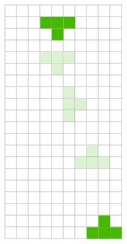
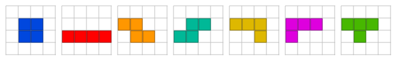
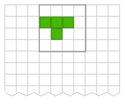
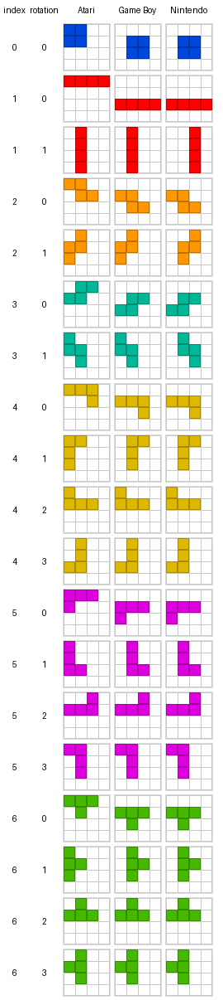

Tetris-playing AI the Polylith way - Part 3

I denna tredje del växer vår domän när vi lägger till move-komponenten, där vi implementerar en algoritm som beräknar alla giltiga flytt för en piece (Tetromino) i sin startposition. Vi passar även på att förbättra läsbarheten för delar av koden som även fortsättningsvis skrivs i Clojure och Python tillsammans med den komponentbaserade arkitekturen Polylith.
Tidigare delar:
- Del 1 - Sätter en piece på en board. Visar skillnader mellan Clojure och Python och skapar komponenterna
pieceochboard. - Del 2 - Implementerar rensning av hela rader. Visar hur vi kan få snabb återkoppling genom att jobba REPL-drivet.
För att denna post inte ska svalla över med kod, så händer det ibland att jag bara refererar till Python-koden. Här finns alla kod:
Tetris-varianter
Tetris har släppt i en rad olika varianter, så som den handhållna Game Boy, konsollen Nintento NES, och detta arkadspel från Atari, som jag i mina unga dagar spelade ohälsosamt mycket på en numera nedlagd biljardhall!
Alla varianter uppför sig lite olika vad gäller vilka färger bitarna har, var de startar och hur de roterar, med mera.
I de flesta varianter av Tetris startar bitarna i följande rotationslägen (liggande) innan de börjar falla:

Var på brädet bitarna startar varierar också mellan de olika varianterna av Tetris. Till exempel så startar bitarna i femte x-position i Nintendo NES och Atari Arcade, medan de startar i fjärde x-position i Game Boy:

I dessa äldre varianter av Tetris roterar bitarna endast moturs, till skillnad mot vissa nyare spel där man kan rotera både med- och moturs.
Här jämför vi hur bitarna roterar för de tre nämnda varianterna av Tetris:

För Atari är bitarna orienterade mot övre vänstra hörnet (undantaget stående I), medan de mestadels roterar runt sitt centrum i de andra två varianterna.
I vår kod reprecenterar vi en piece genom att ange fyra [x y] celler:
[[0 1] [1 1] [2 1] [1 2]]
Denna representation är enkel för koden att hantera, men kommunicerar dåligt för en människa vilken form en piece har.
Grundregeln är att kod ska skrivas så att den blir enkel att förstå för de som läser och ändrar den (människor och på senare tid även AI-Agenter).
Låt oss därför definiera en piece så här istället:
(def T0 ['---
'xxx
'-x-])
Python:
T0 = [
"---",
"xxx",
"-x-",
]
Nu kan vi definiera alla sju pieces och deras rotationslägen för Game Boy (Python-koden är nästan identisk):
(ns tetrisanalyzer.piece.settings.game-boy
(:require [tetrisanalyzer.piece.shape :as shape]))
(def O0 ['----
'-xx-
'-xx-
'----])
(def I0 ['----
'----
'xxxx
'----])
(def I1 ['-x--
'-x--
'-x--
'-x--])
(def Z0 ['---
'xx-
'-xx])
(def Z1 ['-x-
'xx-
'x--])
(def S0 ['---
'-xx
'xx-])
(def S1 ['x--
'xx-
'-x-])
(def J0 ['---
'xxx
'--x])
(def J1 ['-xx
'-x-
'-x-])
(def J2 ['x--
'xxx
'---])
(def J3 ['-x-
'-x-
'xx-])
(def L0 ['---
'xxx
'x--])
(def L1 ['-x-
'-x-
'-xx])
(def L2 ['--x
'xxx
'---])
(def L3 ['xx-
'-x-
'-x-])
(def T0 ['---
'xxx
'-x-])
(def T1 ['-x-
'-xx
'-x-])
(def T2 ['-x-
'xxx
'---])
(def T3 ['-x-
'xx-
'-x-])
(def pieces [[O0]
[I0 I1]
[Z0 Z1]
[S0 S1]
[J0 J1 J2 J3]
[L0 L1 L2 L3]
[T0 T1 T2 T3]])
(def shapes (shape/shapes pieces))
Den avslutande shapes funktionen omvandlar bitarna till det format koden använder:
[;; O
[[[1 1] [2 1] [1 2] [2 2]]]
;; I
[[[0 2] [1 2] [2 2] [3 2]]
[[1 0] [1 1] [1 2] [1 3]]]
;; Z
[[[0 1] [1 1] [1 2] [2 2]]
[[1 0] [0 1] [1 1] [0 2]]]
;; S
[[[1 1] [2 1] [0 2] [1 2]]
[[0 0] [0 1] [1 1] [1 2]]]
;; J
[[[0 1] [1 1] [2 1] [2 2]]
[[1 0] [2 0] [1 1] [1 2]]
[[0 0] [0 1] [1 1] [2 1]]
[[1 0] [1 1] [0 2] [1 2]]]
;; L
[[[0 1] [1 1] [2 1] [0 2]]
[[1 0] [1 1] [1 2] [2 2]]
[[2 0] [0 1] [1 1] [2 1]]
[[0 0] [1 0] [1 1] [1 2]]]
;; T
[[[0 1] [1 1] [2 1] [1 2]]
[[1 0] [1 1] [2 1] [1 2]]
[[1 0] [0 1] [1 1] [2 1]]
[[1 0] [0 1] [1 1] [1 2]]]]
Så här ser testet för shape-funktionen ut:
(ns tetrisanalyzer.piece.shape-test
(:require [clojure.test :refer :all]
[tetrisanalyzer.piece.shape :as shape]))
(deftest converts-a-piece-shape-grid-to-a-vector-of-xy-cells
(is (= [[2 0]
[1 1]
[2 1]
[1 2]]
(shape/shape ['--x-
'-xx-
'-x--
'----]))))
Python:
from tetrisanalyzer.piece import shape
def test_converts_a_piece_shape_grid_to_a_list_of_xy_cells():
assert [
[2, 0],
[1, 1],
[2, 1],
[1, 2],
] == shape.shape(
[
"--x-",
"-xx-",
"-x--",
"----",
]
)
Implementation i Clojure:
(ns tetrisanalyzer.piece.shape)
(defn cell [x character y]
(when (= \x character)
[x y]))
(defn row-cells [y row]
(keep-indexed #(cell %1 %2 y)
(str row)))
(defn shape [piece-grid]
(vec (mapcat identity
(map-indexed row-cells piece-grid))))
(defn shapes [piece-grids]
(mapv #(mapv shape %)
piece-grids))
Om du är ovan med Clojure, kommer här förklarande exempel till ett par av funktionerna:
(map-indexed vector ["I" "love" "Tetris"])
;; ([0 "I"] [1 "love"] [2 "Tetris"])
Funktionen map-indexed itererar över elementen "I", "love", och "Tetris", och bygger upp en ny lista där varje elment skapas genom anrop till funktionen vector med indexet som räknas upp, vilket motsvarar:
(list (vector 0 "I")
(vector 1 "love")
(vector 2 "tetris"))
;; ([0 "I"] [1 "love"] [2 "Tetris"])
Funktionen keep-indexed fungerar på samma sätt, men tar bara med värden som ej är nil, därav användningen av when:
;; %1 = first argument (index)
;; %2 = second argument (value)
(keep-indexed #(when %2 [%1 %2])
["I" nil "Tetris"])
;; ([0 "I"] [2 "Tetris"])
Implementation i Python:
def shape(piece_grid):
cells = []
for y, row in enumerate(piece_grid):
for x, ch in enumerate(row):
if ch == "x":
cells.append([x, y])
return cells
def shapes(pieces_grids):
return [
[shape(piece-grid) for piece_grid in piece_grids]
for piece_grids in pieces_grids
]
Här använder vi list comprehension för att konvertera till [x, y] celler. Funktionen enumerate har samma funktion som map-indexed i Clojure, att lägga till ett index (0, 1, 2, ...) för varje element.
Domänmodellering
Den nya koden som beräknar giltiga flytt av en piece i sin ursprungsposition, behöver ligga någonstans. Vi behöver kunna flytta och rotera en piece, och testa om platsen är ledig på en board. Detta gör att logiken ligger i gränslandet mellan piece och board.
I Polylith används komponenter för att modellera domänen och i det här fallet beslutade jag mig för att den nya koden får bo i komponenten move:

Inom varje komponent listar vi vad som ingår i dess interface (vad som är publikt) medan pilarna anger hur komponenterna används sinsemellan.
Implementationen delar vi upp i namespacen move, visit, och placement:
▾ tetris-polylith
▸ bases
▾ components
▸ board
▾ move
▾ src
interface.clj
move.clj
placement.clj
visit.clj
▾ test
move_test.clj
placement_test.clj
visit_test.clj
▸ piece
▸ development
▸ projects
Så här ser move-test ut:
(ns tetrisanalyzer.move.move-test
(:require [clojure.test :refer :all]
[tetrisanalyzer.move.move :as move]
[tetrisanalyzer.board.interface :as board]
[tetrisanalyzer.piece.interface :as piece]
[tetrisanalyzer.piece.settings.atari-arcade :as atari-arcade]))
(def x 2)
(def y 1)
(def rotation 0)
(def S piece/S)
(def shapes atari-arcade/shapes)
(def bitmask (piece/rotation-bitmask shapes S))
(def piece (piece/piece S rotation shapes))
(def board (board/board ['xxxxxxxx
'xxx--xxx
'xx--xxxx
'xxxxxxxx]))
(deftest valid-move
(is (= true
(move/valid-move? board x y S rotation shapes))))
(deftest valid-left-move
(is (= [2 1 0]
(move/left board (inc x) y S rotation nil shapes))))
(deftest invalid-left-move
(is (= nil
(move/left board x y S rotation nil shapes))))
(deftest valid-right-move
(is (= [2 1 0]
(move/right board (dec x) y S rotation nil shapes))))
(deftest invalid-right-move
(is (= nil
(move/right board x (dec y) S rotation nil shapes))))
(deftest unoccupied-down-move
(is (= [[2 1 0] nil]
(move/down board x (dec y) S rotation nil shapes))))
(deftest down-move-hits-ground
(is (= [nil [[2 1 0]]]
(move/down board x y S rotation nil shapes))))
(deftest valid-rotation
(is (= [2 1 0]
(move/rotate board x y S (dec rotation) bitmask shapes))))
(deftest invalid-rotation-without-kick
(is (= nil
(move/rotate board (inc x) y S (inc rotation) bitmask shapes))))
(deftest valid-rotation-with-kick
(is (= [2 1 0]
(move/rotate-with-kick board (inc x) y S (inc rotation) bitmask shapes))))
(deftest invalid-move-outside-board
(is (= false
(move/valid-move? board 10 -10 S rotation shapes))))
Det första testet valid-move validerar att S-biten:
['-xx
'xx-]
Kan placers på position x=2, y=1:
['xxxxxxxx
'xxx--xxx
'xx--xxxx
'xxxxxxxx]
Utöver det, testas olika varianter av giltiga flytt och rotation in till det tomma området, samt ogiltiga flytt utanför området.
I Tetris finns det något som kallas kick, eller wall kick. När man roterar en bit och positionen är upptagen på brädet, kommer även x-1 att testas (ett steg till vänster). På Nintendo NES är detta avslaget, medan den är aktiverad på de övriga två varianterna vi stödjer här. På nyare Tetris testas ibland även andra placeringar än x-1.
Implementationen ser ut så här:
(ns tetrisanalyzer.move.move
(:require [tetrisanalyzer.piece.interface :as piece]))
(defn cell [board x y [cx cy]]
(or (get-in board [(+ y cy) (+ x cx)])
piece/X))
(defn valid-move? [board x y p rotation shapes]
(every? zero?
(map #(cell board x y %)
(piece/piece p rotation shapes))))
(defn left [board x y p rotation _ shapes]
(when (valid-move? board (dec x) y p rotation shapes)
[(dec x) y rotation]))
(defn right [board x y p rotation _ shapes]
(when (valid-move? board (inc x) y p rotation shapes)
[(inc x) y rotation]))
(defn down
"Returns [down-move placement] where:
- down-move: next move when moving down or nil if blocked
- placement: final placement if blocked, or nil if can move down"
[board x y p rotation _ shapes]
(if (valid-move? board x (inc y) p rotation shapes)
[[x (inc y) rotation] nil]
[nil [[x y rotation]]]))
(defn rotate [board x y p rotation bitmask shapes]
(let [new-rotation (bit-and (inc rotation) bitmask)]
(when (valid-move? board x y p new-rotation shapes)
[x y new-rotation])))
(defn rotate-with-kick [board x y p rotation bitmask shapes]
(or (rotate board x y p rotation bitmask shapes)
(rotate board (dec x) y p rotation bitmask shapes)))
(defn rotation-fn [rotation-kick?]
(if rotation-kick?
rotate-with-kick
rotate))
Funktionerna är ganska enkla som synes, så låt oss istället titta på koden som hjälper oss hålla reda på vilka flytt som redan besökts:
(ns tetrisanalyzer.move.visit)
(defn visited? [visited-moves x y rotation]
(if-let [visited-rotations (get-in visited-moves [y x])]
(not (zero? (bit-and visited-rotations
(bit-shift-left 1 rotation))))
true)) ;; Cells outside the board are treated as visited
(defn visit [visited-moves x y rotation]
(assoc-in visited-moves [y x] (bit-or (get-in visited-moves [y x])
(bit-shift-left 1 rotation))))
Anropet till standardfunktionen bit-shift-left returnerar en satt bit i någon av de fyra lägsta bitarna:
| rotation | bit |
|---|---|
| 0 | 0001 |
| 1 | 0010 |
| 2 | 0100 |
| 3 | 1000 |
Dessa "flaggor" används sedan för att markera att vi besökt ett visst [x y rotation] flytt på ett bräde. Notera att vi skickar in ett "besöks-bräde" (visited-moves) till visited och får tillbaka en kopia där [x y] cellen har en bit satt för angiven rotation. Denna "kopiering" är dock väldigt snabb och minneseffektiv, se "structural sharing" under Data Structures.
Testerna ser ut så här:
(ns tetrisanalyzer.move.visit-test
(:require [clojure.test :refer :all]
[tetrisanalyzer.move.visit :as visit]))
(def x 2)
(def y 1)
(def rotation 3)
(def unvisited [[0 0 0 0]
[0 0 0 0]])
(deftest move-is-not-visited
(is (= false
(visit/visited? unvisited x y rotation))))
(deftest move-is-visited
(let [visited (visit/visit unvisited x y rotation)]
(is (= true
(visit/visited? visited x y rotation)))))
Python:
from tetrisanalyzer.move.visit import is_visited, visit
X = 2
Y = 1
ROTATION = 3
UNVISITED = [
[0, 0, 0, 0],
[0, 0, 0, 0],
]
def test_move_is_not_visited():
assert is_visited(UNVISITED, X, Y, ROTATION) is False
def test_move_is_visited():
visited = [row[:] for row in UNVISITED]
visit(visited, X, Y, ROTATION)
assert is_visited(visited, X, Y, ROTATION) is True
Nu har vi bäddat för att kunna implementera koden som räknar ut alla giltiga flytt för en piece i sin ursprungsposition, funktionen placements.
Vi börjar med testet:
(ns tetrisanalyzer.move.placement-test
(:require [clojure.test :refer :all]
[tetrisanalyzer.piece.interface :as piece]
[tetrisanalyzer.move.placement :as valid-moves]
[tetrisanalyzer.piece.settings.atari-arcade :as atari-arcade]))
(def start-x 2)
(def sorter (juxt second first last))
(def board [[0 0 0 0 0 0]
[0 0 1 1 0 0]
[0 0 1 0 0 1]
[0 0 1 1 1 1]])
(def shapes atari-arcade/shapes)
;; Start position of the J piece:
;; --JJJ-
;; --xxJ-
;; --x--x
;; --xxxx
(deftest placements--without-rotation-kick
(is (= [[2 0 0]
[3 0 0]]
(sort-by sorter (valid-moves/placements board piece/J start-x false shapes)))))
;; With rotation kick, checking if x-1 fits:
;; -JJ---
;; -Jxx--
;; -Jx--x
;; --xxxx
(deftest placements--with-rotation-kick
(is (= [[1 0 1]
[2 0 0]
[3 0 0]
[0 1 1]]
(sort-by sorter (valid-moves/placements board piece/J start-x true shapes)))))
Detta testar att vi får tillbaka de giltiga [x y rotation]-positioner som en piece kan placeras på ett bräde utifrån sin ursprungsposition.
Notera att vi importerar namespacet tetrisanalyzer.piece.settings.atari-arcade, från en annan komponent piece. I Polylith är det bara tillåtet att accessa en annan komponent via dess interface från produktionskoden. Från testkoden är vi dock fria att access alla namespaces, vilket gör att vi inte behöver exponera denna funktionalitet i piece's interface.
Implementationen:
(ns tetrisanalyzer.move.placement
(:require [tetrisanalyzer.move.move :as move]
[tetrisanalyzer.move.visit :as visit]
[tetrisanalyzer.board.interface :as board]
[tetrisanalyzer.piece.interface :as piece]))
(defn ->placements [board x y p rotation bitmask valid-moves visited-moves rotation-fn shapes]
(loop [next-moves (list [x y rotation])
placements []
valid-moves valid-moves
visited-moves visited-moves]
(if-let [[x y rotation] (first next-moves)]
(let [next-moves (rest next-moves)]
(if (visit/visited? visited-moves x y rotation)
(recur next-moves placements valid-moves visited-moves)
(let [[down placement] (move/down board x y p rotation bitmask shapes)
moves (keep #(% board x y p rotation bitmask shapes)
[move/left
move/right
rotation-fn
(constantly down)])]
(recur (into next-moves moves)
(concat placements placement)
(conj valid-moves [x y rotation])
(visit/visit visited-moves x y rotation)))))
placements)))
(defn placements [board p start-x kick? shapes]
(let [bitmask (piece/rotation-bitmask shapes p)
visited-moves (board/empty-board board)
rotation-fn (move/rotation-fn kick?)]
(if (move/valid-move? board start-x 0 p 0 shapes)
(->placements board start-x 0 p 0 bitmask [] visited-moves rotation-fn shapes)
[])))
Vi börjar med att förklara följande sektion i ->placements:
(loop [next-moves (list [x y rotation])
placements []
valid-moves valid-moves
visited-moves visited-moves]
Dessa fyra rader initierar det data vi vill loopa på, där next-moves är den lista med moves vi behöver gå igenom och som växer och betas av löpande, och där placements ackumulerar giltiga flytt.
Då Clojure ej stödjer tail-recursion, finns istället loop att tillgå som alternativ till en rekursiv lösning, vilket vi vill undvika för att inte få problem med stack overflow om vi skulle använda bräden större än 10x20.
(if-let [[x y rotation] (first next-moves)]
Hämtar nästa move från next-moves och fortsätter med koden direkt under, eller returnerar placements (sista raden i funktionen) om next-moves är tom, vilket är alla giltiga flytt.
(let [next-moves (rest next-moves)]
Drop:ar första elementet i next-moves, som vi precis har plockat ut.
(if (visit/visited? visited-moves x y rotation)
Om flyttet redan besökts, fortsätt med:
(recur next-moves placements valid-moves visited-moves)
Som fortsätter vår sökning efter giltiga flytt (raden efter (loop [...]), genom att gå till nästa flytt att utvärdera.
Annars, om flyttet ej har besökts, fortsätt med:
(let [[down placement] (move/down board x y p rotation bitmask shapes)
...]
Sätter down till nästa nedåtflytt (om ledigt) eller placement om det ej gick att flytta nedåt, vilket händer när vi nått botten eller om någon del av "bygget" är i vägen.
För dessa rader:
(keep #(% board x y p rotation bitmask shapes)
[move/left
move/right
rotation-fn
(constantly down)])
Kommer %-tecknet ersättas med funktionerna i vektorn, vilket motsvarar:
[(move/left board x y p rotation bitmask shapes)
(move/right board x y p rotation bitmask shapes)
(rotation-fn board x y p rotation bitmask shapes)
(down board x y p rotation bitmask shapes)]
Dessa funktionsanrop kommer att utföra alla möjliga flytt, inklusive en rotation, som alla returnerar [x y rotation] om positionen var ledig på brädet, eller nil om upptagen. Funktionen keep filtrerar bort nil-värden, vilket är alla giltiga flytt som sedan tilldelas moves.
Till slut körs:
(recur (into next-moves moves)
(concat placements placement)
(conj valid-moves [x y rotation])
(visit/visit visited-moves x y rotation))
Vilket anropar loop igen med:
next-movesmed de eventuellt nyamovestillagdaplacementsmed det eventuellt giltiga flyttet tillagtvalid-movesmed aktuellt move tillagtvisited-movesdär aktuellt move är markerat som besökt
Detta snurrar på, tills next-moves är tom, och då returneras placements.
Funktionen som kickar igång allt, och returnerar giltiga flytt för en piece i sin startposition:
(defn placements [board p x kick? shapes]
(let [y 0
rotation 0
bitmask (piece/rotation-bitmask shapes p)
visited-moves (board/empty-board board)
rotation-fn (move/rotation-fn kick?)]
(if (move/valid-move? board x y p rotation shapes)
(->placements board x y p rotation bitmask [] visited-moves rotation-fn shapes)
[])))
board: en tvådimensionell vektor som representerar en board, oftast 10x20.p: piece index (0, 1, 2, 3, 4, 5, eller 6).x: vilken kolumn 4x4-griden startar (där biten finns). Första kolumnen är 0.y: satt till 0 (översta raden) och anger startrad för 4x4-griden.rotationsatt till 0 (start-rotation).bitmask: används vid uppräkning avrotationså att den börjar om på 0 när nått slutet på det antal rotationer den kan göra.visited-moves: har samma struktur som en board, d.v.s en tvådimensionell array av vektorer, oftast 10x20.rotation-fn: returnerar rätt rotationsfunktion beroende på om kick är aktivt eller ej. Testar även position x-1 om kick? är true.shapes: formerna för alla pieces och dess rotationslägen, lagrade som [x y] celler.(if (move/valid-move? board x y p rotation shapes): vi måste testa ifall den initiala positionen är ledig eller ej, och returnera en tom lista (vektor) om ej ledig.(->placements board x y p rotation bitmask [] visited-moves rotation-fn shapes)beräknar de giltiga flytten.
Sammanfattning
I denna tredje del tog jag mig an den svåraste uppgiften hittills, att räkna ut alla giltiga flytt för en bit i sin startposition.
Jag undvek att implementera det som en rekursiv algoritm, då vi annars blir begränsade i hur stora bräden vi kan hantera.
Den nya koden behövde bo någonstans, men varken piece eller board kändes rätt, så istället tillkom den nya move-komponenten.
Vi passade även på att göra koden lättare att jobba med, genom att specificera bitarna på ett mer läsbart sätt, och med den ändringen kunde vi enkelt stödja tre olika varianter av Tetris.
Hoppas du hade lika kul som jag 😃
Happy coding!
Published: 2026-02-08